Nationwide Building Society — Case Study
From Card Readers to Face ID: Reinventing Secure Banking
Reducing login friction and simplifying everyday banking through biometric authentication and streamlined information architecture.
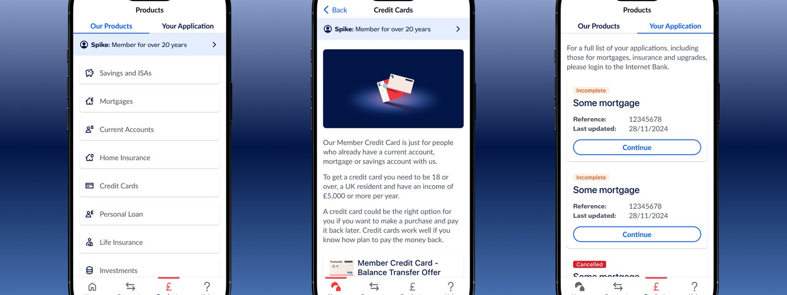
The Task
Nationwide's mobile banking app, used by millions of UK customers, was experiencing friction due to outdated authentication methods and scattered navigation patterns. Users had to rely on hardware card readers for critical tasks like transfers, leading to delays and dissatisfaction. As the bank moved towards modernizing its digital infrastructure, our task was to redesign the mobile banking experience to be seamless, secure, and efficient, empowering customers with intuitive interactions and smarter workflows.
Outdated Login, Fragmented Hierarchy
Customers were frustrated by an outdated login process, especially when quick access was needed for tasks like checking balances or transferring funds. The lack of biometric authentication and a fragmented information hierarchy made everyday banking cumbersome. While the legacy UI adhered to baseline accessibility standards, it still posed usability challenges for older customers and those with visual impairments, particularly around contrast, type sizing, and content discoverability.
Hypothesis
We hypothesized that redesigning the mobile app with a streamlined IA, integrated biometric authentication, and a component-driven design system would:
- Reduce user drop-offs during login and transaction flows by 30–40%
- Improve time-to-task completion for core actions like "view balance" or "make a payment"
- Enhance user trust through consistency, accessibility, and modern UI patterns
Research Approach
UX research was led by the onshore team; I worked closely with them to turn findings into design decisions. This meant:
- Translating key research findings into actionable UI decisions — particularly around login friction, content discoverability, and mobile-first interactions
- Studying competitor apps for patterns in biometrics, cardless transactions, and dashboards
Competitor Analysis
We reviewed mobile banking apps from top UK and global financial institutions, focusing on authentication flows, navigation models, and product discoverability.
Key takeaways included:
- Most modern apps prominently featured Face ID or fingerprint login with fallback options.
- Competitors like Monzo and Revolut offered simplified dashboards with upfront access to balances and transactions.
- Quick-access shortcuts (like recent payees or 'Send again') were standard in most payment flows.
- Financial products were grouped under a single hub, avoiding deep navigation trees.
Key Insights
- Biometric demand was high. Users wanted Face ID or fingerprint login to avoid using card readers.
- Account information was scattered. Users had difficulty accessing summary views or toggling between accounts.
- Navigation was unintuitive. Important features like savings goals or passcode updates were buried under layers.
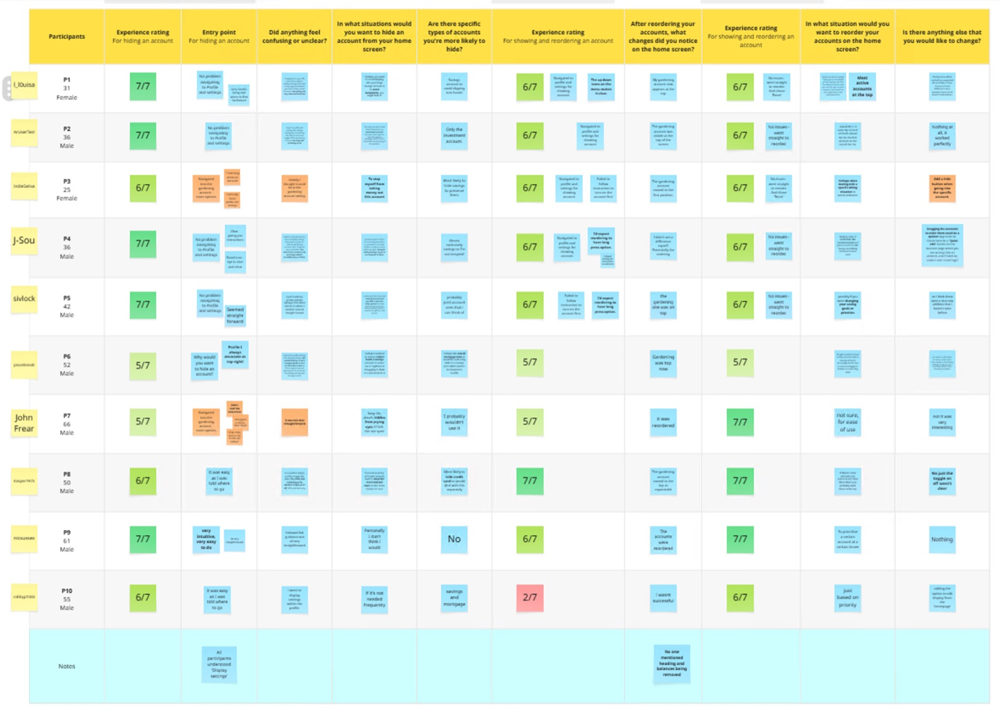
What Success Looked Like
- Reduce login friction by integrating Face ID and fingerprint authentication, allowing users to skip card reader steps and access the app more efficiently.
- Improve discoverability by restructuring product and account navigation, making it easier to find key financial tools and insights.
- Create a component-driven design using scalable UI elements for consistency across features and smoother developer collaboration.
Component-Driven, Mobile-First
Component-Driven UI System
- Designed reusable components (cards, toggles, summary views, modals)
- Proposed for inclusion in the design system to ensure scalability across teams
Mobile-First Patterns
- Focused on thumb-reach zones and tap target sizes
- Applied progressive disclosure in features like mortgage applications
Components
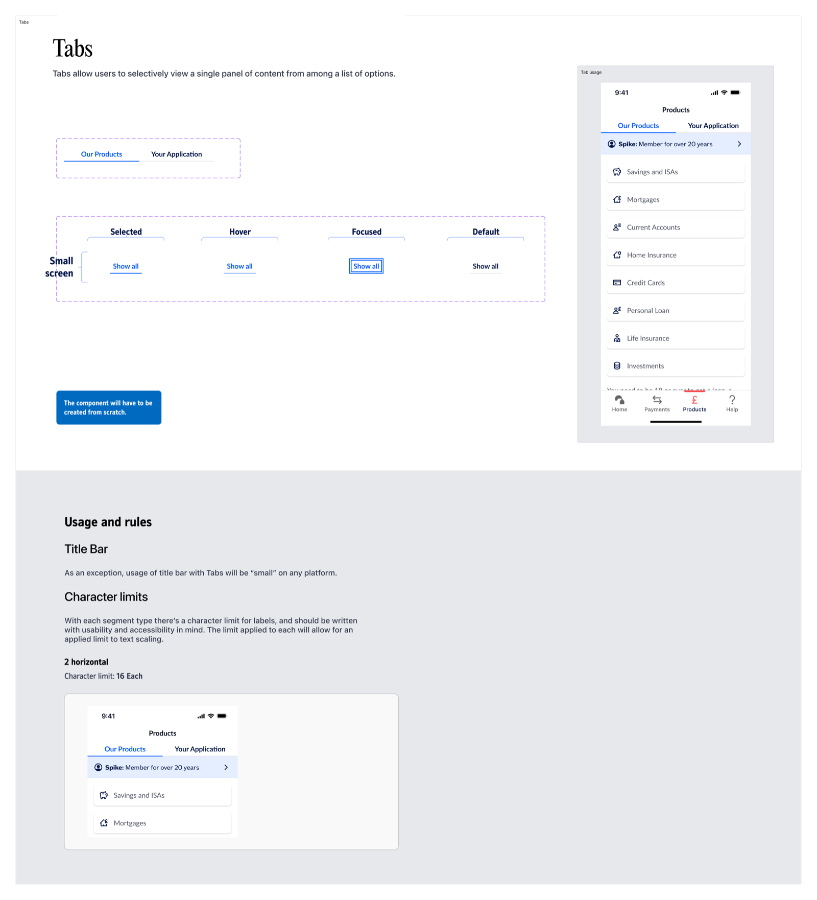
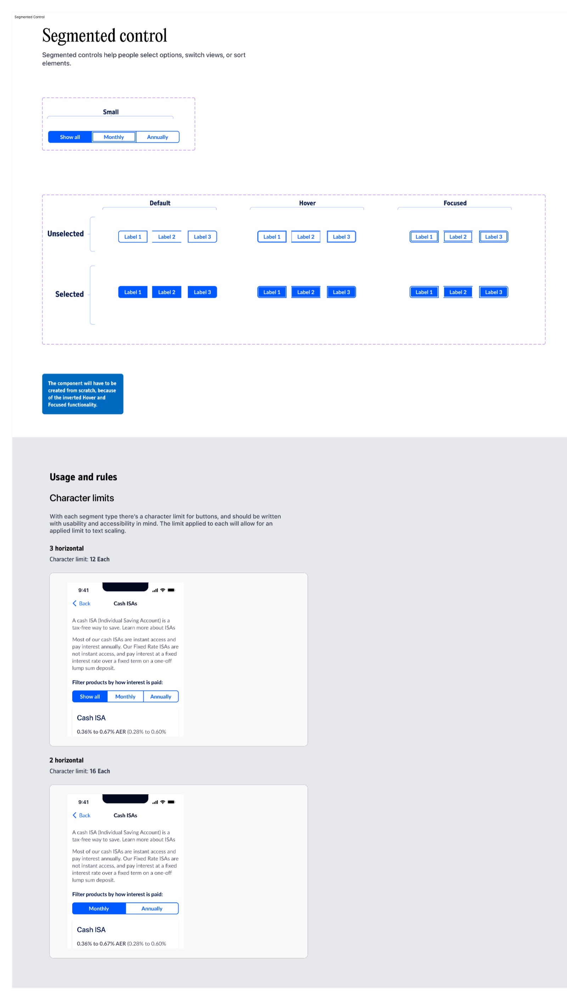
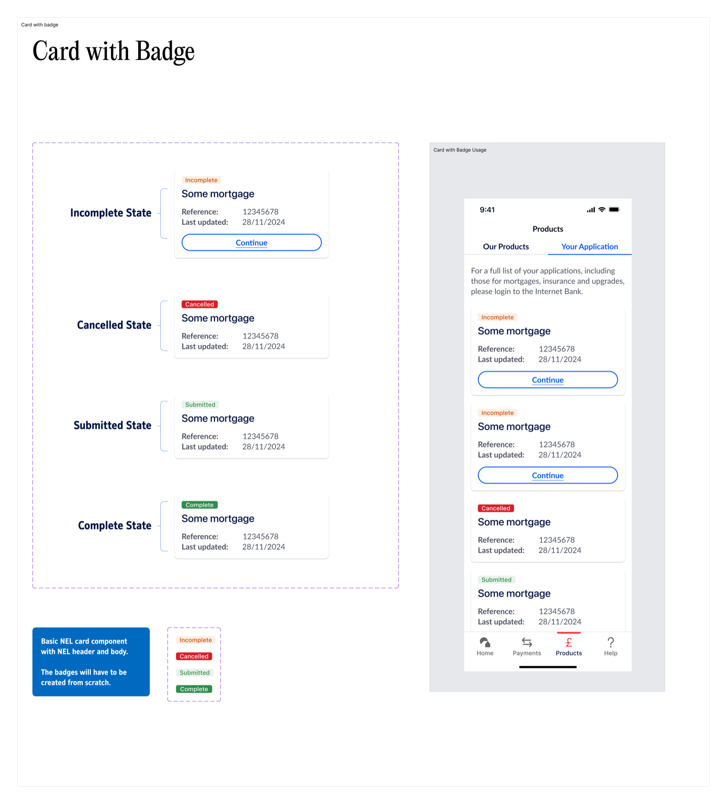
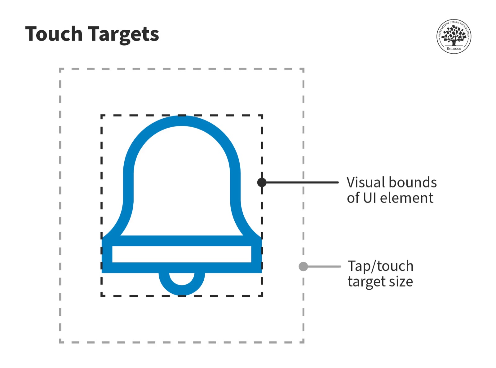
James Connor
- Goals: Access accounts quickly with Face ID; consolidate account tracking
- Pain Points: Frustrated by old passcode logins; navigation feels slow
- Traits: Daily app user, prefers minimal-step flows and personalization
Mary Thompson
- Goals: View pension and savings easily; complete tasks without help
- Pain Points: Struggles with multi-step flows and small UI text
- Traits: Uses tablet, values clarity and accessibility
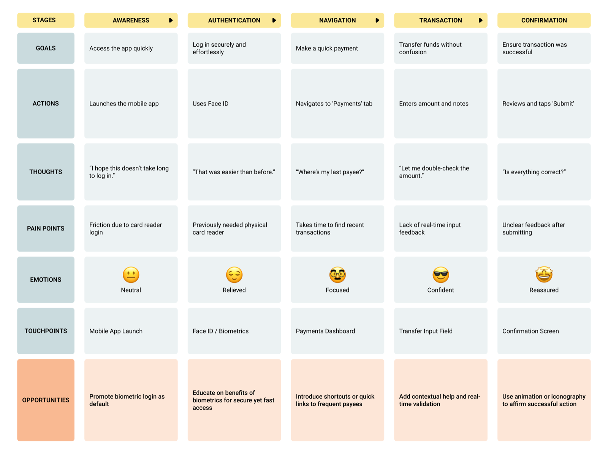
Feedback at Key Touchpoints
To enhance user feedback and system clarity, I created micro-interactions for key touchpoints like biometric login, error states, and payment confirmations.
These subtle animations helped:
- Reinforce success and error cues
- Guide user attention through state changes
- Improve perceived responsiveness of the interface
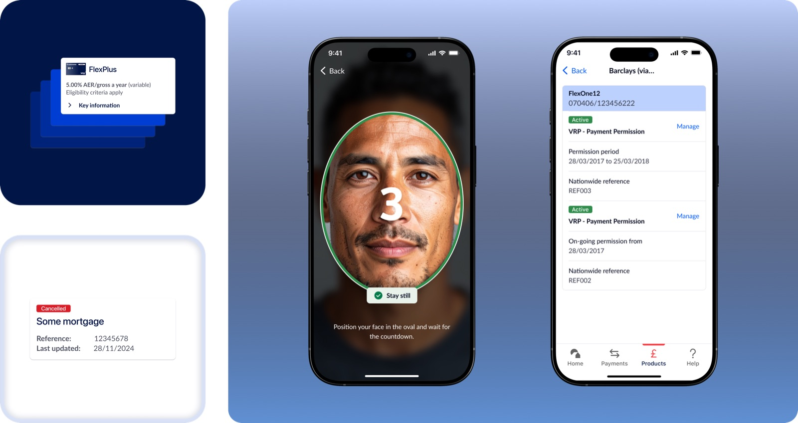
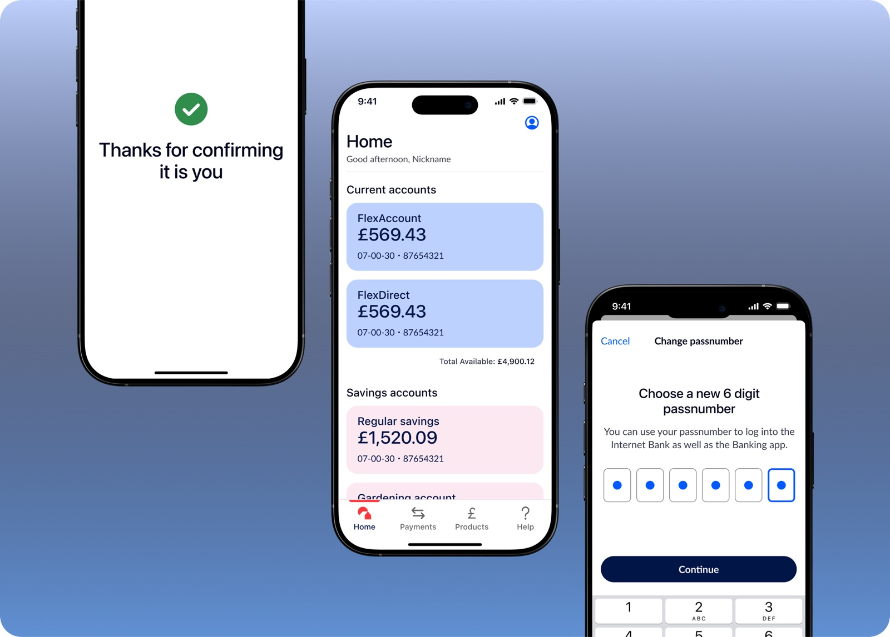
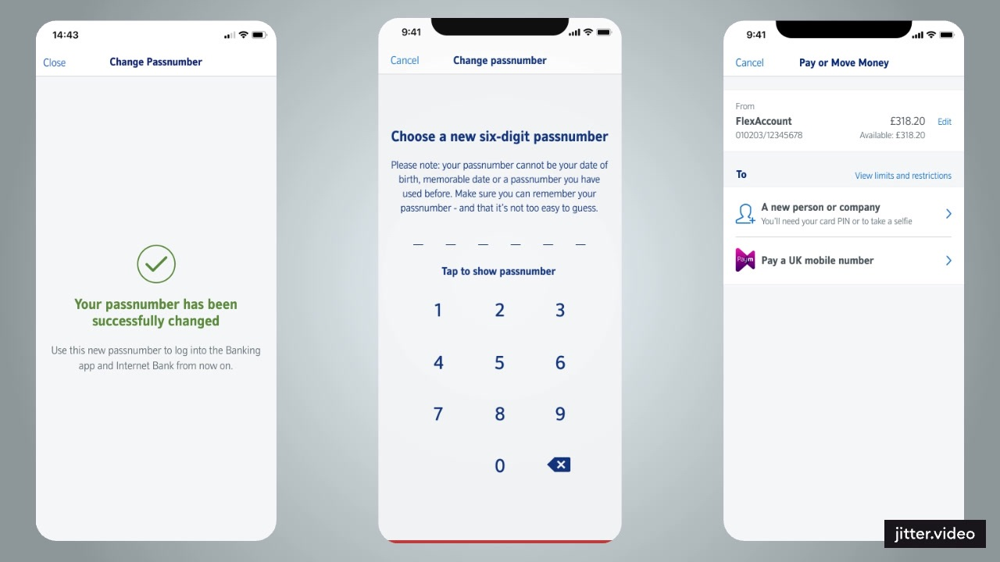
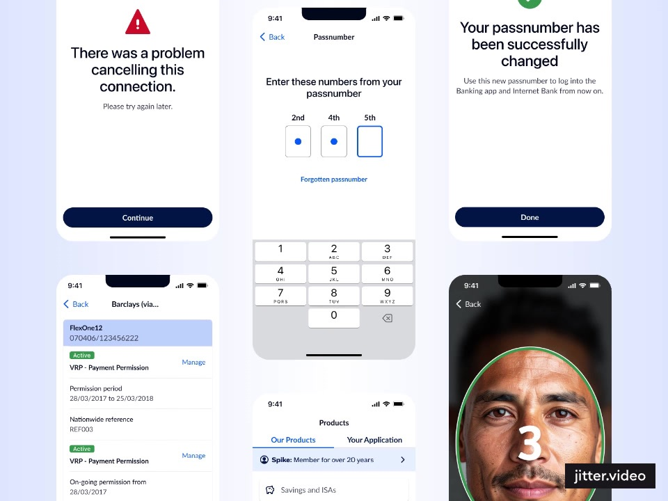